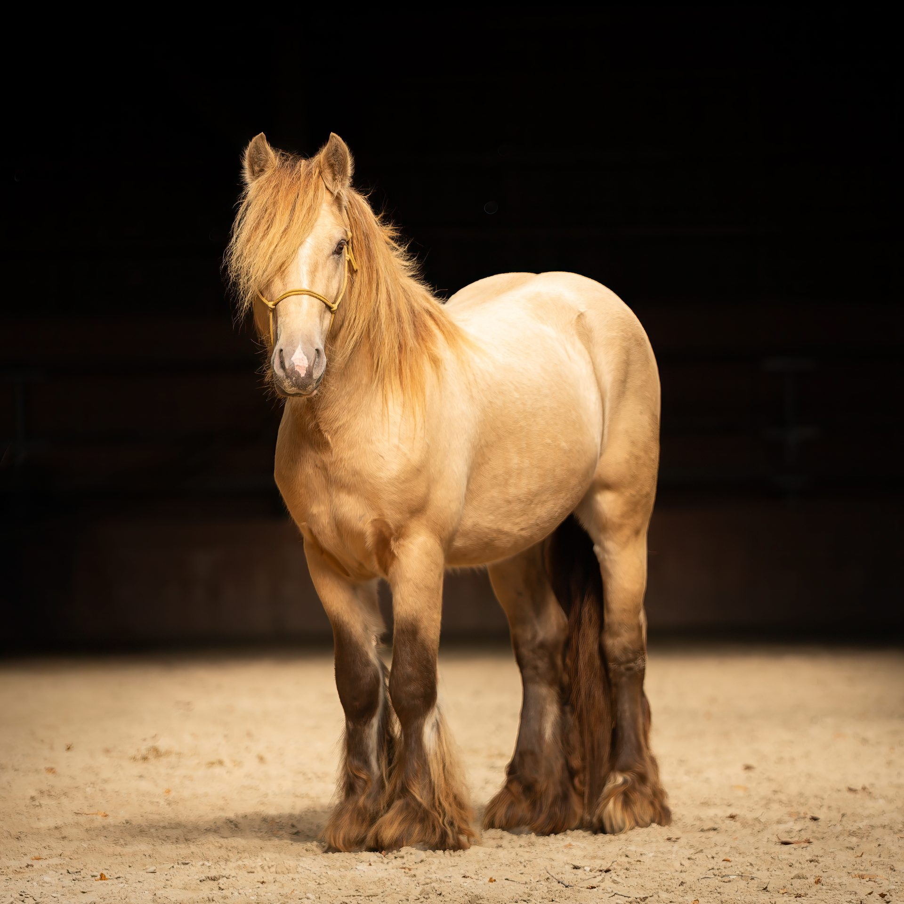

Origines
 MèreSD SuzieFacteur Irish Cob
MèreSD SuzieFacteur Irish Cob
Pedigree & lignées
Quercus Kaeru réunit la lignée galloise San Cler, portée par son père Avantgarde, Vice-Champion de France 2025, et la lignée Gypsy Vanner SD portée par sa mère Suzie. Ses deux parents vivent à l'élevage — leurs fiches complètes sont accessibles depuis les cartes ci-dessous.

PèreSan Cler AvantgardeVice-Champion de France 2025Grand-pèreSan Cler Talk Of The Town
The Milky Bar Kid
San Cler Orange Pop
Grand-mèreSan Cler Uptown Girl
San Cler Razzamataz
San Cler Coffee Creme
MèreSD SuzieFacteur Irish Cob
Grand-pèreSD Woolly MammothGVHS GV04025
Samson of Wales
Sovereign
Grand-mèreSD Olivia
Note sur les origines
Quercus Kaeru est Plein Papier, ses deux parents étant inscrits et testés. Les lignées San Cler sont documentées sur trois générations ; côté maternel, la branche SD Olivia n'est pas documentée au-delà de sa génération.
Quercus Kaeru est Plein Papier, ses deux parents étant inscrits et testés. Les lignées San Cler sont documentées sur trois générations ; côté maternel, la branche SD Olivia n'est pas documentée au-delà de sa génération.